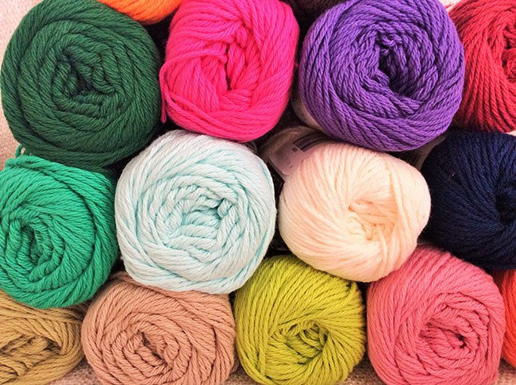
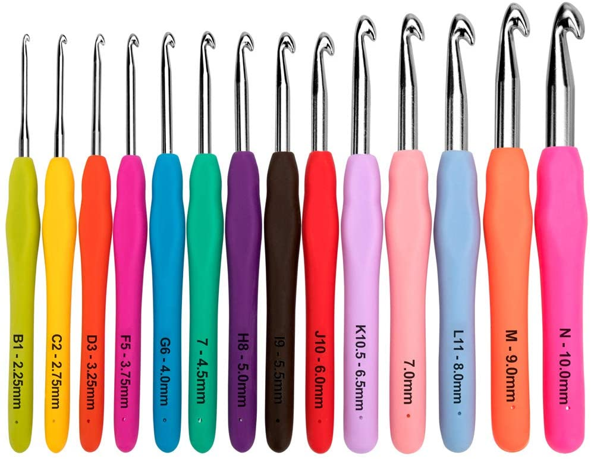

Before learning how to crochet, one must select the right yarn that will match what they will be making. There are four main types of yarn, each serving different purposes: wool, cotton, acrylic, and crochet thread. Wool yarn is the recommended choice for beginners, as it is made of a resilient fiber, so you will be able to unravel it smoothly if you made a mistake. Practicing crochet stitches is much easier with wool. Cotton yarn is more difficult to work with than wool yarn, as it is made of an inelastic fiber. Cotton is great at keeping its shape, and is recommended for warm weather projects, as it is very light and thin. Acrylic yarn is the most commonly used yarn as it comes in a wide variety of colors and sizes. Although fibers can get broken apart easily, acrylic yarn is very versatile and can be used for many different projects. Crochet thread, while not really a yarn, is an excellent choice when creating delicate items with intricate patterns, as the thread is thin and sturdy. Now that you have some information on different types of yarn, think of what you will be making and choose your yarn wisely!
Like the wide variety of yarn, there are also many crochet hooks to choose from. Choosing the right hook is crucial to having a successful crocheting experience. All yarn has a specific thickness, which is called yarn weight. It is always listed on the yarn's packaging, as well as the recommended hook size. For beginner crocheters, it is advised that a worsted weight yarn is chosen, which corresponds to a 4mm hook, or medium size. Crochet hooks come in different varieties, some made of steel, other made with wood or plastic, The type of hook you use is completely based on preference.
